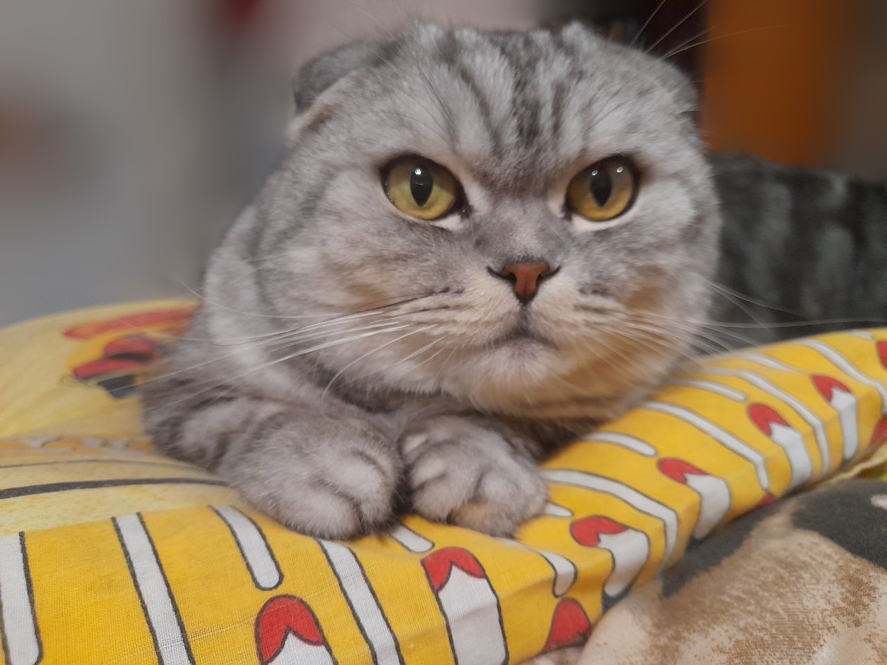

Hi! Welcome to my website!
I'm a software dev living in Germany. I like coding and reading visual novels.
My top 3 favourite VNs are Saya no Uta, Umineko and CHAOS;HEAD NOAH. I also really like Danganronpa (especially the second game). Can't wait for 2x2 to release!!! I'll finish Hundred Line eventually too (I hope).
Pls send me your VN recommendations! I love horror ones! Click the email icon to send me a message.
You're gonna find a collection of links to various things I like on the links page.
I'm currently working on Nandev with my friend. It's a super awesome project, so click here to check it out!
Some of the games I like are The Binding of Isaac, Hollow Knight, Hollow Knight: Silksong, Deep Rock Galactic, Barotrauma and Project Zomboid. Fear & Hunger and Fear & Hunger 2 are also great. I'm not a big fan of massive AAA games, but Cyberpunk 2077 was pretty fun. I wish the world were more interactive, tho.
I also really love cats! There's a cat called Rudolf who comes to visit me almost every day (sometimes at like 2 AM). He eats a whole lot but somehow manages to stay thin. I wish I could eat that much without getting fat. I also like dogs. Huskies are my favourite, but Shiba Inus are cool too.
